Mara Quill: songs, scores and small rooms
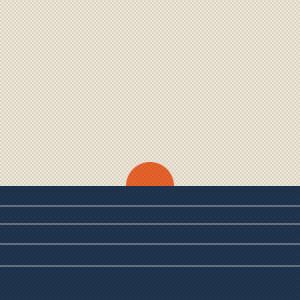
newlow tide almanac notes about the letterlow tide almanac is out march 06. nine songs, one hall.
records
8 items
Albums, eps, singles and scores for dance and film, newest first.
- low tide almanacalbum · 2026
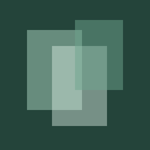
glass hoursep · 2025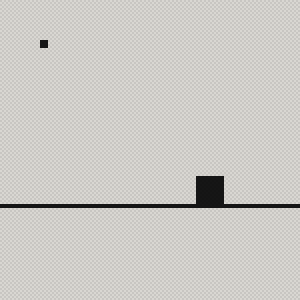
the quiet floorscore · 2025- small weathersingle · 2025
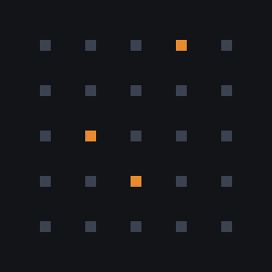
orchard at nightalbum · 2024- hand-me-down radioep · 2023
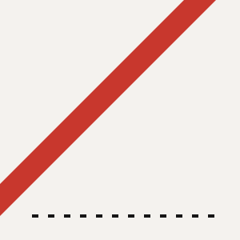
salt and signalsingle · 2023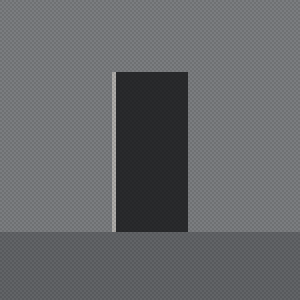
room tonescore · 2022
Nothing in this folder yet.
low tide almanac
Nine songs written over one winter in a rented house by the sea, and recorded in the church hall down the road with whatever the hall already had: an upright piano, a pump organ and the room itself.
- harbour light3:48
- the long way down to the water5:12
- salt2:57
- almanac4:31
- low tide6:05
- paper boats3:20
- what the gulls know4:46
- ebb4:02
- a light left on6:31
Written, played and produced by Mara Quill. Strings by the Tidewater Quartet. Recorded at St Brennan's Hall, mixed by June Okafor.
shows
8 dates
Solo, with piano and pump organ, in rooms of a few hundred people. Open a date for doors, prices and how to get tickets.
dec 04 2026lisbonpier 9 hallon sale
doors 7pm · show 8pm · 24 eur · all ages
Seated. Tickets from the venue's own box office.
dec 06 2026berlinkanalhallefew left
doors 7:30pm · show 8:30pm · 28 eur · 16 and over
Standing, with a few chairs at the back. Tickets from the venue.
jan 15 2027taipeiriverside annexon sale
doors 7pm · show 7:30pm · 1,200 twd · all ages
Seated. Tickets from the venue and at the door.
jan 17 2027osakahall no. 4on sale
doors 6:30pm · show 7pm · 5,500 jpy · all ages
Seated, numbered. Tickets from the venue.
jan 20 2027seoulbasement twosold out
doors 7pm · show 8pm · 55,000 krw · 19 and over
Sold out. Returns go back on sale at the venue on the day.
feb 08 2027melbournethe long roomon sale
doors 7pm · show 8pm · 45 aud · 18 and over
Seated at long tables. Tickets from the venue.
mar 02 2027montréalsalle griseon sale
doors 7pm · show 8pm · 35 cad · all ages
Seated. Tickets from the venue.
mar 05 2027mexico cityforo del aguafree entry
doors 5pm · show 6pm · free · all ages
An afternoon set in a record shop. First come, first in.
No dates there yet.
not near you?
Leave a city and an email. You get one message when a date is announced nearby, nothing else.
Noted. When there is a date near , one email goes to .
store
6 items
Records, printed scores and a few things to wear, packed by hand and posted twice a week.
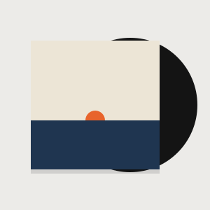
low tide almanac, 2 × lp$34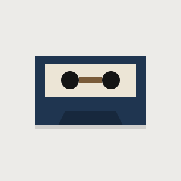
low tide almanac, cassette$12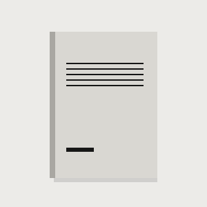
the quiet floor, printed score$28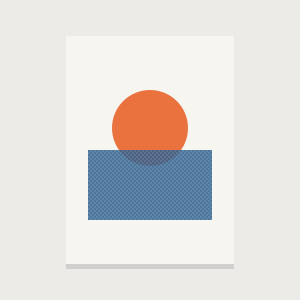
tide table, risograph print$40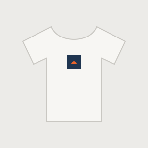
tide tee$30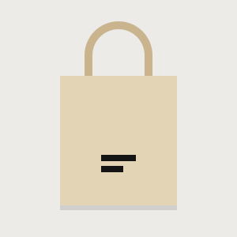
canvas tote$18 sold out
Nothing here right now.
low tide almanac, 2 × lp
$34
Two records in a heavy sleeve, with the lyrics and a photograph of the hall printed on the inner sleeves. A download code is inside.
- ships
- within four days, from the north
- returns
- 30 days, unopened
- pressing
- 180 g, 45 rpm
notes
8 notes
Letters, studio notes and things written on trains. Newest first.
- november 02 2026on recording in a church hallstudio
- october 14 2026a letter before the recordletters
- september 01 2026the piano with the missing keystudio
- july 19 2026six nights, six roomsroad
- may 03 2026why there is no singleletters
- december 12 2025writing for dancersstudio
- september 28 2025trains between showsroad
- june 01 2025keeping a notebookletters
Nothing filed here yet.
on recording in a church hall
The hall is cold until about eleven. We learned to start with the quiet songs, while the radiators were still ticking, and leave the loud ones for the afternoon when the room had warmed up and so had we.
Nothing in the hall was bought for us. The piano is the one the Sunday school uses. The pump organ needs a second person to keep the bellows going, so most of the organ parts are played by two people, and you can hear both of them breathing.
We put two microphones at the back of the room and one by the piano, and left them there for nine days. The record sounds like that room because it is mostly that room.
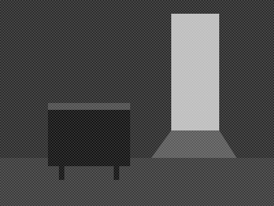
-mq
about
I write songs, and music for rooms: theatres, rehearsal floors made of plywood, a church hall with a pump organ. I live by the sea in the north and record most things within walking distance of the house.
Since 2019 I have made two albums, two eps, two singles and two scores, one for a dance piece and one for a short film. I play alone, sometimes with a string quartet, and only in rooms where people can hear each other breathe.
To put on a show, use a song or write about the music, the contact page is the quickest way to reach me. For everything else there is the letter.
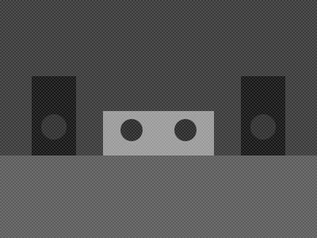
- based
- a town by the sea, in the north
- plays
- piano, pump organ, tape
- works with
- dancers, film makers, small theatres
- bookings
- through the contact page
-mq
contact
Bookings, press, using a song in a film or a dance piece, or anything else. I read every message myself and reply within a week.
Thank you, . Your note about is in.
The reply goes to , within a week.
Or write to hello@maraquill.example.
the letter
Four times a year I write a letter: what I am working on, where I am playing, and one thing I have been listening to. It comes from me, it is short, and there is no other email.
You are on the list. The next letter goes to ().
Every letter has a one-click way out at the bottom.
privacy and terms
This page is a sample. Replace it with your own text before the site goes live.
privacy
When you sign up for the letter or send a message, your email address and what you wrote are kept so that I can reply or send the letter. They are not sold or shared, and every letter has a link to leave the list.
The site keeps one setting in your browser, light or dark colours, and nothing else. There is no tracking and no advertising.
terms
Prices in the store include tax where it applies; shipping is added at checkout. Orders ship within four working days. Unopened items can be returned within 30 days for a full refund.
The music, words and pictures on this site belong to their makers. Please ask before using them.
file not found
This address may be old, or the file has moved. Everything that exists is on the desk.